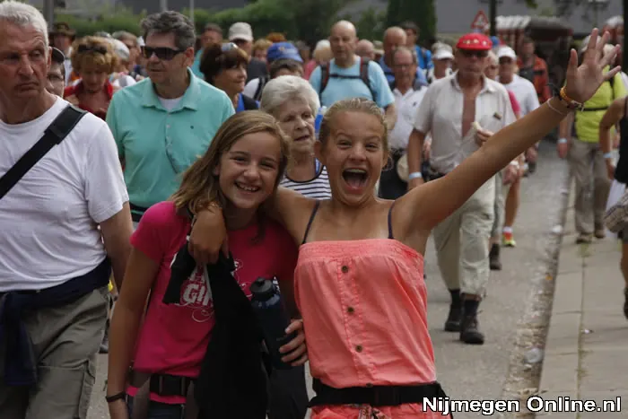

Nieuws ·
Vierdaagse 2021 afgelast

Dit bericht uit ons archief verscheen op 9 februari 2021 op NieuwsNijmegen.nl. Data, tijden en prijzen kunnen inmiddels anders zijn.
Geen Vierdaagse in 2021
Coronamaatregelen en gebrek aan perspectief maken organiseren van de Vierdaagse onverantwoord.
Stichting DE 4DAAGSE maakt met pijn in het hart bekend dat de Vierdaagse in 2021 niet doorgaat. De coronapandemie, de bijkomende maatregelen en de vooruitzichten maken het voor de organisatie onmogelijk om de 104de Vierdaagse te organiseren zoals iedereen dat mag verwachten.
Belangrijkste redenen voor afgelasting:
- Anderhalve meter onmogelijk en vaccinatiegraad niet hoog genoeg
De kans dat Nederland in juli nog te maken heeft met de 1,5-metermaatregel is groot. Voor wandelaars valt tijdens wandeldagen op het start- en finishterrein veel te regelen, maar onderweg en voor het publiek zorgt dit voor problemen. De organisatie moet rekening houden met de aantrekkingskracht van de Vierdaagse op het publiek. Het controleren en naleven van de 1,5-metermaatregel is bij het grootste evenement van Nederland onmogelijk. Bovendien: is de Vierdaagse nog wel de Vierdaagse zonder het feest en de support van de toeschouwers aan de zijlijn?
Stichting DE 4DAAGSE verneemt daarnaast de twijfels over de vaccinatiegraad in Nederland in de derde week van juli. Er is een kans dat deze nog niet hoog genoeg is om de Vierdaagse op een veilige manier te organiseren. Marsleider Henny Sackers legt uit: “Wij voelen een grote verantwoordelijkheid voor de veiligheid en gezondheid van onze deelnemers, toeschouwers, vrijwilligers en medewerkers. We kunnen hun veiligheid op dit moment niet garanderen en willen niemand blootstellen aan gevaar in welke vorm dan ook.”
- Financieel en organisatorisch onverantwoord
Om een groot evenement als de Vierdaagse te organiseren, begint men al maanden van tevoren met de voorbereidingen. Daar komen ook kosten bij kijken. De huidige onzekerheden nu en richting de zomer maken het risico te groot om die stappen te nemen. Bovendien moeten de deelnemers op tijd beginnen met hun voorbereidingen. Zij nemen vakantiedagen op, investeren tijd in training en maken kosten voor inschrijving, vervoer en verblijf, terwijl ook voor hen de onzekerheid groot is. Door deze beslissing nu te nemen, weten wandelaars, medewerkers, vrijwilligers, partners en leveranciers waar zij aan toe zijn.
- Geen concessies aan identiteit
In het donker met duizenden deelnemers wachten op het startschot, high fives met het publiek en elkaar kunnen omhelzen na weer een volbrachte dag: dat is het Vierdaagsegevoel. De morele steun van tienduizenden toeschouwers en het ongekend diverse en internationale deelnemersveld maken de wandelmars uniek. Juist in deze tijd had de organisatie heel graag voor een lichtpuntje gezorgd, maar er is een grens aan noodzakelijke concessies die in strijd zijn met de identiteit van de Vierdaagse.
Alles gedaan om afgelasting te voorkomen
De afgelopen maanden heeft Stichting DE 4DAAGSE alle mogelijkheden onderzocht om de Vierdaagse in 2021 te kunnen organiseren. Zo is, naast vele andere ideeën, onderzocht of de Vierdaagse verplaatst kon worden naar een andere datum en of er op meerdere routes tegelijkertijd kon worden gelopen. Voor al deze opties geldt dat Stichting DE 4DAAGSE deze om uiteenlopende redenen niet haalbaar en/of wenselijk acht. Hoofd organisatiebureau Lotte Janssen: “Externe partijen passen hun hele planning en vakanties aan op een Vierdaagse in de derde week van juli. Zelfs het onderhoud van wegen is daar omheen gepland. Dit betekent dat we de Vierdaagse dus niet kunnen verplaatsen of over meerdere weken kunnen verspreiden.”
Teleurstelling
De organisatie deelt de teleurstelling die nu ongetwijfeld zal overheersen. In de eerste plaats bij de wandelaars die al voor het tweede jaar op rij de Vierdaagse niet door zien gaan. Bij de Nijmegenaren en inwoners van doorkomstgemeenten die wederom het feest in hun voortuin moeten missen. Maar ook bij de partners, leveranciers, vrijwilligers en alle anderen die de Vierdaagse ieder jaar weer mogelijk maken en een warm hart toedragen. En tot slot ook bij talloze ondernemers die nu inkomsten moeten missen in deze toch al zware tijd. Stichting DE 4DAAGSE gaat er – vanaf vandaag – alles aan doen om in 2022 wél weer een feestelijke Vierdaagse te kunnen organiseren.
Toekomst
Deelnemers die in 2020 stonden ingeschreven en hebben betaald, blijven in ieder geval verzekerd van deelname bij de eerstvolgende editie van de Vierdaagse. Verdere informatie over inschrijving en reglementen voor de editie van 2022 is nog niet bekend. De organisatie bekijkt samen met Koninklijke Wandelbond Nederland (KWBN) daarnaast nog hoe het Vierdaagsegevoel toch gezamenlijk valt te beleven met een alternatief voor de Vierdaagse. Ook zonder de Vierdaagse blijft de derde week van juli voor wandelaars en voor Nijmegen namelijk dé Vierdaagseweek. Wanneer daar meer over bekend is, wordt dat gecommuniceerd via de website www.4daagse.nl en social media.
In de tussentijd moedigt de organisatie iedereen aan om in beweging te blijven. Juist nu, want wandelen kan altijd en overal. Henny Sackers: “Wij hopen iedereen in 2022 weer te mogen verwelkomen op de Wedren.”